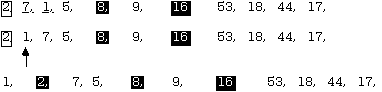

It is now time to step back and consider what has been accomplished in the last section. It began with a simple insert sort and, in an effort to reduce the number of swaps, the complexity of the code was increased considerably. In fact, the last version of the Shell sort has so many computations just to decide what to do the comparisons on that it surely loses efficiency on one hand, even as it purportedly gains it on the other.
If one abandon the insert idea altogether, and looks for some entirely different approach, can one achieve both simplicity in coding and also minimize the number of comparisons and exchanges? The answer is "yes", but the cost paid is in subtlety--that is, the algorithms become harder to understand.
The method presented here is sometimes called the position-and-exchange, or divide-and-conquer sort, because it depends on carving the original collection of objects into two portions, with the item separating the two parts being, in fact, in its correct final position. This contrasts with the bubble sort and selection sort, which both place the largest item into its place on a given pass, and with all types of insert source, which do not necessarily place any item into its final position on a given pass. One proceeds something like this:
1. Call the first item in the portion list required to be sorted the pivot.
2. Find the correct final position for the pivot and put it there.
3. In doing so, ensure that the items placed before the pivot are all less than it and the ones placed after the pivot are all greater than it.
4. This partitions the list into a left sub-list and a right sub-list.
5. Repeat steps 1-6 recursively for the left sub-list provided it has more than one element.
6. Repeat steps 1-6 recursively for the right sub-list provided it has more than one element.
Each time a sub-list is considered, exactly one item is placed in its correct final position. According to the earlier analysis of the binary search pattern, this leads one to conclude that log2n lists will be examined in all. This conclusion may be somewhat optimistic, however, for it assumes that each step will partition the list exactly in half--an outcome that, though desirable, will not always be achieved. Still, this partitioning into two equal portions should approximate the behaviour of this algorithm on average, so it is worthwhile to proceed. An attempt will be made to fine tune on this point later.
The method of sorting by partitioning a list into two sub-lists around some pivot, (where the items in the left sub-list are all less than the pivot, and those in the right sub-list are all greater than the pivot), and then recursively sorting the left and right sub-lists in the same manner is called a quicksort.
The key to realizing steps two and three in the sequence above is to start with the next item after the pivot, and counting forward, discover the first one that is greater than the pivot. (i.e. it really belongs to the right sub-list). One then commences examining items from the last in the current list backwards to find the first one that is less than the pivot. (i.e. it really belongs to the left sub-list). Since these two items are both now in the wrong sub-list, swap them. Then pick up the count again where it left off and continue, gradually working toward a collision between the two counters. To see this in operation, suppose one begins with the list:
Isolating item #1 (16) as the pivot, scan from #2 and discover that item #4 (44) is the first one greater than 16. Suspending the count here, begin with item #11 (17) and work backwards. Item #10 (5) is the first one less than 16, so swap it with item #4 to get:

The underscore marks the two that were swapped and also the places where counting was suspended in the forward and backward scans. Continuing, the next two that must be swapped because they are in the wrong sub-list are item #6 (18) and item #9 (1) so the list becomes:
The next item found that is greater than 16 is item #8 (53), but at this point, the count from the right passes with the one from the left (at the arrow) without finding another item less than the pivot value, so there are no more swaps to make in this pass, and the scan has now found the correct place to put the pivot item (at position #7.)
Rather than move everything down and insert it there, observe that the lower items are out of order anyway and can be re-positioned later, so it will do to simply swap the pivot item with item #7. This produces:
The list is written with the 16 isolated, inverted and separating two sub-lists so as to emphasize the fact of the partition. The item 16 is now in the correct position and need never be touched again. Because of the way in which the correct position for the item 16 was located, everything in the left sub-list is now less than 16, and everything in the right sub-list is greater than 16 (hence the name pivot). Thinking recursively, it is now possible to observe that when the left and right sub-lists are sorted, the entire list will be sorted.
Repeating for the left sub-list yields:
Repeat for the sub-list left of the 8, obtaining

The left sub-list of the pivot 2 is sorted. (one item) When the right sub-list of 2 (two items) is sorted, one has:
Now the left sub-list of the last pivot (7) has only one item an so is sorted. Backing up the recursion chain, the right sub-list of the pivot 8 also has only one item (9) so it is already sorted, too. Backing up farther, the next list to sort is the right sub-list of the original pivot 16.
The last right sub-list of the pivot 18 has only one element and is sorted, so the entire sort is finished. Note that there were even places where one or the other of the two sub-lists was empty and also did not need to be considered.
Having carefully hand-stepped through this sorting method, it is now possible to produce the code for the quicksort. This code will depart a little from the previous conventions for sorts in this chapter, in that it will assume that it is being called by a client that is already numbering the array [0 .. n-1]. This assumption is made because the quicksort, being recursive, is its own major client, and already has the array numbered in that manner when it calls itself.
Notice also the treatment of numbers scanned in either direction that are equal to the pivot. They are left where they are for that scan. Eventually they will be shuffled adjacent to the this pivot when another sub-list is sorted.
PROCEDURE QuickSort1 (VAR source : ARRAY OF CARDINAL;lBound, uBound : CARDINAL);
VAR
lCount, uCount, pivot : CARDINAL;
BEGIN
IF lBound >= uBound (* trap door for recursion *)
THEN
RETURN
END;
pivot := source [lBound]; (* comparisons made with this one *)
lCount := lBound + 1; (* forward count starts one after the pivot *)
uCount := uBound; (* backward count starts at the end *)
WHILE lCount <= uCount
DO
WHILE (lCount <= uBound) AND (source [lCount] <= pivot)
DO (* scan the list from the front until *)
INC (lCount) (* the first number greater than the *)
END; (* pivot is found or the count gets past the end *)
WHILE (uCount > lBound) AND (source [uCount] >= pivot)
DO (* scan the list from the end until *)
DEC (uCount) (* the first number less than the *)
END; (* pivot is found or the count gets to the start *)
IF lCount < uCount (* counts have not passed each other yet *)
THEN (* so trade between upper and lower partitions *)
Swap (source [lCount], source [uCount]);
END;
END; (* while lCount <= uCount *)
(* now swap the pivot into the correct position *)
source [lBound] := source [uCount];
source [uCount] := pivot;
(* and do the left and right sub-lists *)
IF uCount # lBound (* otherwise no need to swap & no left list*)
THEN
QuickSort (source, lBound, uCount - 1);
(* sort the remaining left list *)
END;
IF uCount < uBound (* otherwise there is no right list *)
THEN
QuickSort (source, uCount + 1, uBound)
END;
END QuickSort1;
Notice that the inner loop, while it consists only of increments and decrements, involves two comparisons in the conditions for each of the while statements. Most of the time, these comparisons, designed to prevent the indices from becoming invalid, will not be done, for most of the work is done away from the endpoints of the range. Thus, the majority of these tests are wasted. The extra comparisons can be eliminated, but this is achieved at the cost of doing a few more swaps and making some other changes.
At the top end, the lCount must be prevented from going past uBound and causing a reference to an item not in the range being sorted. In the code above, lCount could become one greater than uBound, but on the subsequent entry to the loop, no invalid reference can be made to source [lCount] because of the short-circuited boolean evaluation on the condition. This can also be done by ensuring that the item at uBound is greater than or equal to the pivot to begin with (check and swap if needed,) and by not ignoring items equal to the pivot on the scan, but including them as swappable. This latter suggestion will take care of the low end too, where the main concern is that the index must not underflow the cardinal type.
Situations to watch:
In the variation on the code that follows, all these ideas have been implemented. The lCount starts after the pivot item, and because the item at uBound was previously guaranteed to be not less than the pivot, and lCount skips only the items less than the pivot, it is guaranteed to stop on a valid index. Likewise, the uCount starts before the item at uBound (because it is known not to be less than the pivot) and is guaranteed not to pass the pivot item. Any items equal to the pivot that happen to be in the range between the two ends will get swapped to the other partition by this version (they were skipped by the last one), but this is a small price to pay to eliminate one comparison from every iteration of the inner loop.
PROCEDURE QuickSort2 (VAR source : ARRAY OF CARDINAL; lBound, uBound : CARDINAL);
VAR
lCount, uCount, pivot : CARDINAL;
BEGIN
IF lBound >= uBound (* trap door for recursion *)
THEN
RETURN
END;
IF source [uBound] < source [lBound]
THEN
Swap (source [uBound], source [lBound])
END;
pivot := source [lBound]; (* comparisons made with this one *)
lCount := lBound; (* forward count starts at the pivot *)
uCount := uBound; (* backward count starts at end *)
WHILE lCount <= uCount
DO
REPEAT (* scan the list from the front + 1 until *)
INC (lCount) (* the first number greater than *)
UNTIL (source [lCount] >= pivot); (* or equal pivot is found *)
REPEAT (* scan the list from the end - 1 until *)
DEC (uCount) (* the first number less than *)
UNTIL (source [uCount] <= pivot); (* or equal pivot is found *)
IF lCount < uCount (* counts have not passed each other yet *)
THEN (* so trade between upper and lower partitions *)
Swap (source [lCount], source [uCount]);
END;
END; (* while lCount <= uCount *)
(* now swap the pivot into the correct position *)
source [lBound] := source [uCount];
source [uCount] := pivot;
(* and do the left and right sub-lists *)
IF uCount # lBound (* otherwise no need to swap & no left list*)
THEN
QuickSort (source, lBound, uCount - 1);
(* sort the remaining left list *)
END;
IF uCount < uBound (* otherwise there is no right list *)
THEN
QuickSort (source, uCount + 1, uBound)
END;
END QuickSort2;
Earlier, it was noted that if the partitions did not divide the list into roughly equal parts, this sort would lose efficiency. In fact, the worst possible case is a list that starts out already sorted, for each partition will have an empty left sub-list and all but the one element in the right. (Starting out reverse sorted is just as bad). Quicksort degenerates into a slowsort in such cases--indeed the insert method is faster. There are several ways to help ensure that this degeneration does not take place. Perhaps the easiest is to begin by using the middle item as the pivot. One would be extremely unlucky if this produced the worse case each time. The middle item could be swapped with the low index item in the range before doing anything else, or it could be used as is. If the latter is done, however, it would have to be compared to ensure that it is not less than the low index item so as to prevent the possibility of underflowing the cardinal type if the index becomes negative. Here is the first part of the modified code, with the first suggestion implemented. Note that there is no need to do a swap if the list has only two items.
IF lBound >= uBound (* trap door for recursion *)
THEN
RETURN
END;
IF uBound - lBound > 2
THEN
Swap (source [(uBound + lBound) DIV 2], source [lBound])
END;
IF source [uBound] < source [lBound]
THEN
Swap (source [uBound], source [lBound])
END;
An even more sophisticated modification is to select the median of the first, middle, and last items as the pivot in each case. These three could be sorted in place, and the middle one used as the pivot. The sort would be unlikely to degenerate, and the first and last items would be arranged so as to ensure the appropriate stopping points for the two counts.
Yet another modification could be done based on the observation that the computations involved here have become relatively large in number if only a small list is to be sorted. At some point, the insert sort is actually faster, so one calls it to finish things off.
The first portion of the quicksort would then be expressed as:
PROCEDURE QuickSort (VAR source : ARRAY OF CARDINAL; lBound, uBound : CARDINAL);
VAR
lCount, uCount, pivot : CARDINAL;
BEGIN
IF lBound >= uBound (* trap door for recursion *)
THEN
RETURN
ELSIF uBound - lBound < 10 THEN (* insert sort if list small *)
InsertSort (source, lBound, uBound);
ELSE (* staying here, so use middle as pivot *)
Swap (source [(uBound + lBound) DIV 2], source [lBound])
END;
IF source [uBound] < source [lBound]
THEN
Swap (source [uBound], source [lBound])
END;
(* etc....*)
with the rest of the code identical to the last version. The number ten as the cutoff point for the minimum list length to be considered for a quicksort is arbitrary. The reader is invited to time the two versions and find a better boundary for a particular system. Note, however, that it is important to ensure that the quicksort algorithm was operating correctly even for small lists before making this modification. This approach should always be used when implementing algorithms that are new to the programmer--first ensure that it works in all situations; then fine tune it and adapt it for the special cases. The quicksort is regarded as the all-round best sorting algorithm for rearranging an array in place, but it does need to be handled carefully, and its performance is quite sensitive to this fine tuning.
Other slight alterations could also be considered to the quicksort, but the reader is invited to consult a text on algorithms to that end.